15 Atmosphere
- Emissions
- CO2
- NO2
- Methane
-
- Attributing Emissions
- Norway's Responsibility15.1 Emissions
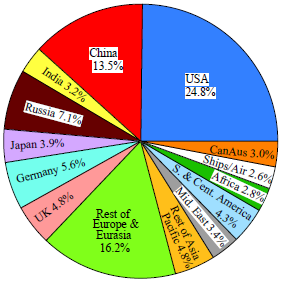
Fig: Cumulative Emissions 1751-2018 by Country/Region
The UK (like the US) is 5X more responsible for global warming than the average nation.
15.1.1 Volcanos
Dessler
The most well-known effect of volcanic eruptions is to cool the climate. This comes from the injection of sulfur gases into the stratosphere. Once in the stratosphere, the sulfur combines with water vapor to form little droplets referred to as volcanic aerosols. These tiny particles reflect incoming sunlight back to space, acting like a shade over the Earth’s surface, leading to a cooling effect.
For most eruptions, this is the dominant effect. The 1991 eruption of Mt. Pinatubo, for example, released enough sulfur to cool the climate by about 0.5C for a few years after the eruption. A more dramatic example of the cooling effect of volcanic eruptions occurred in 1816, often referred to as the “Year Without a Summer”. The eruption of Mt. Tambora in Indonesia the previous year had released an enormous quantity of sulfur into the stratosphere, leading to a drastic decrease in global temperatures. The Northern Hemisphere experienced unseasonable frosts, snowfalls, and prolonged cold during summer, resulting in widespread crop failures, skyrocketing food prices, and severe famine. This unusual and grim weather influenced the arts, most notably by confining Mary Shelley indoors, where she began penning her iconic novel, Frankenstein.
HT did inject sulfur gases into the stratosphere (0.4 MtSO2), but far less than Mt. Pinatubo did (~20 MtSO2). Thus, we expect it to produce a relatively small cooling effect.
HT did inject sulfur gases into the stratosphere (0.4 MtSO2), but far less than Mt. Pinatubo did (~20 MtSO2). Thus, we expect it to produce a relatively small cooling effect.
The overall impact of HT will therefore be the net difference between the cooling effect of aerosols and the warming effect of water vapor. I am presently working with a group led by Dr. Mark Schoeberl on a publication estimating these terms, which is presently in peer review, so I won’t comment on our results other than to say they’re generally consistent with previous work.
Here is a summary of what others have found:
Jenkins et al.: They just calculated the warming impact of water vapor and concluded that it would increase the global average surface temperature by a few hundredths of a degree.
Zhang et al.: They included both aerosol cooling and water vapor warming and concluded: “Ts will decrease by about 0.0315–0.1118°C in the next 1–2 years”.
Zhu et al.: They concluded that the net effect of the volcano would be to cool, with total radiative forcing of around -0.2 W/m^2.
Most of the water was sent really high into the stratosphere, above 25 km. At that height, water has a minimal effect on the climate.
Dessler (2023) The climate impact of the Hunga-Tonga volcanic eruption
15.1.2 Anual Greenhouse Gas Index (AGGI)
Figure shows radiative forcing for CO2, CH4, N2O and groupings of gases that capture changes predominantly in the CFCs, HCFCs, and the HFCs through 2021. Carbon dioxide is by far the largest contributor to total forcing from these gases and methane is the second largest contributor.
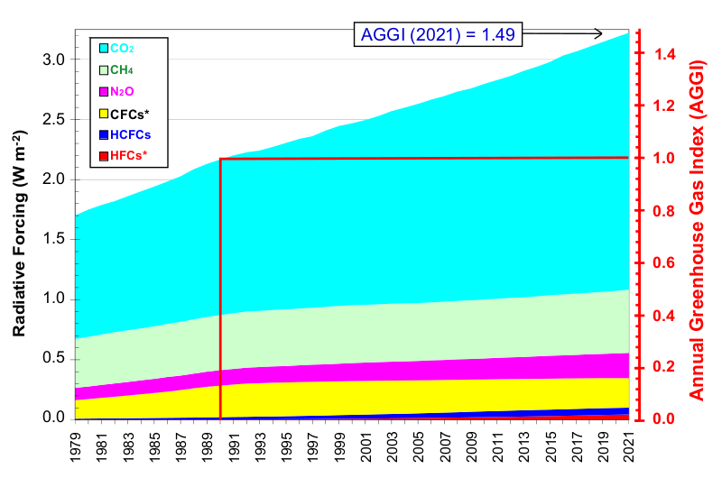
Figure: Radiative forcing, relative to 1750, of virtually all long-lived greenhouse gases. The NOAA Annual Greenhouse Gas Index (AGGI), which is indexed to 1 for the year 1990, is shown on the right axis. The “CFC” grouping includes some other long-lived gases that are not CFCs (e.g., CCl4, CH3CCl3, and Halons), but the CFCs account for the majority (95% in 2021) of this radiative forcing. The “HCFC” grouping includes the three most abundant of these chemicals (HCFC-22, HCFC-141b, and HCFC-142b). The “HFC” grouping includes the most abundant HFCs (HFC-134a, HFC-23, HFC-125, HFC-143a, HFC-32, HFC-152a, HFC-227ea, and HFC-365mfc) and SF6 for completeness, although SF6 only accounted for a small fraction of the radiative forcing from this group in 2021 (13%).
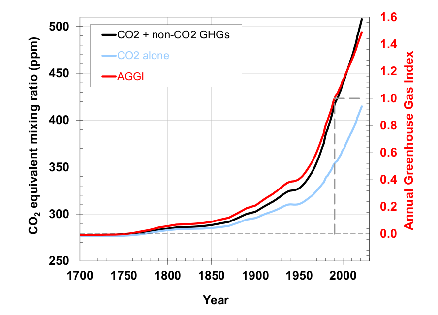
Figure: Pre-1978 changes in the CO2-equivalent abundance and AGGI based on the ongoing measurements of all greenhouse gases reported here, measurements of CO2 going back to the 1950s from C.D. Keeling [Keeling et al., 1958], and atmospheric changes derived from air trapped in ice and snow above glaciers [Machida et al., 1995, Battle et al., 1996, Etheridge, et al., 1996; Butler, et al., 1999]. Equivalent CO2 atmospheric amounts (in ppm) are derived with the relationship (Table 1) between CO2 concentrations and radiative forcing from all long-lived greenhouse gases.
15.1.3 CO2
NOAA Global Monitoring Center
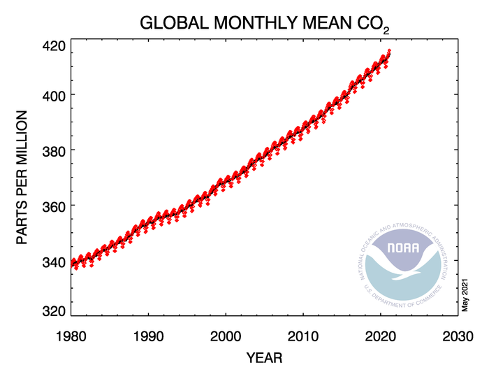 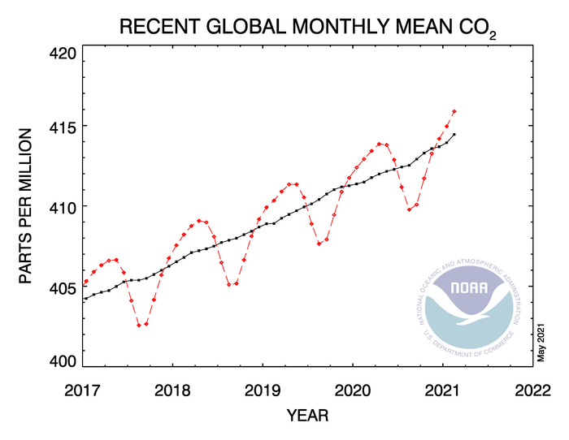
James Hansen
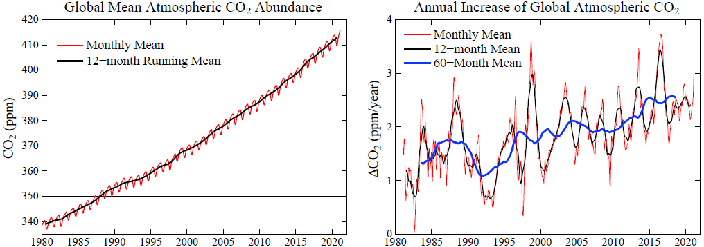
The CO2 growth rate (Fig. 5) is now a bit below the peaks that occur in conjunction with strong El Ninos. However, the CO2 growth rate is not declining. CO2 growth has not even slowed as a result of the reduced economic activity associated with Covid-19.
15.1.3.1 Measurement of CO2
Mauna Loa
Ryan Abstract
A continuous 37 year record of the quiescent CO2 outgassing of Mauna Loa volcano was derived from atmospheric measurements made 6 km downslope of the summit caldera at Mauna Loa Observatory. The volcanic plume is sometimes trapped in the temperature inversion near the ground at night and transported downslope to the observatory. The amount of volcanic CO2 was greatest shortly after the 1975 and 1984 eruptions and then decreased exponentially with decay constants of 6.5 and 1.6 years respectively. Between 1959 and 1973 the decay constant was 6.1 years. The total reservoir mass of CO2 during each of the three quiescent periods was similar and estimated to be between 2 X 108 kg and 5 X 108 kg (0.2 Mt to 0.5 Mt). The 1975 eruption may have been preceded by a small increase in CO2 emissions. A similar increase has occurred since early 1993. Condensation nuclei (CN), presumably consisting of sulfate aerosol, were measured in the volcanic plume throughout the 1974 to 1994 record. The post-1975 period had consistently high levels of CN. Between 1977 and 1980, light-scattering aerosols were detected, coincident with a period of visible fuming at the summit. CN levels after the 1984 eruption were greatly reduced. Two brief periods of low CN emissions during this time correlate with temporary halts or reductions in the rate of summit expansion. These temporary reversals in the inflation of the mountain did not affect the steady exponential decline of the CO2 emissions rate. Upper limits were set on the amounts of H2O, O3, CH4, SO2, aerosol carbon, radon, CO, and H2 present in the plume at various periods between 1974 and 1993. The ratio of SO2 to CO2 was less than 1.8 X 10-3 between 1988 and 1992.
Ryan (1995) Quiescent Outgassing of Mauna Loa Volcano 1958-1994
NOAA Mauna Loa Observatory dto. Measurement Methods
Wet Chemical Analysis
Beck Abstract
More than 90,000 accurate chemical analyses of CO2 in air since 1812 are summarised. The historic chemical data reveal that changes in CO2 track changes in temperature, and therefore climate in contrast to the simple, monotonically increasing CO2 trend depicted in the post-1990 literature on climate-change. Since 1812, the CO2 concentration in northern hemispheric air has fluctuated exhibiting three high level maxima around 1825, 1857 and 1942 the latter showing more than 400 ppm.
Between 1857 and 1958, the Pettenkofer process was the standard analytical method for determining atmospheric carbon dioxide levels, and usually achieved an accuracy better than 3%. These determinations were made by several scientists of Nobel Prize level distinction. Following Callendar (1938), modern climatologists have generally ignored the historic determinations of CO2, despite the techniques being standard text book procedures in several different disciplines. Chemical methods were discredited as unreliable choosing only few which fit the assumption of a climate CO2 connection.
Beck (2007) “180 years of CO2 analysis by chemical methods” (paywall)
Keeling on Beck
Beck questions whether the rise in atmospheric CO2 over the past 50 years is truly unprecedented, citing observations that appear to indicate much higher variability inj the 19th and 20th centuries. If Beck’s contentions were true, they would overthrow 50 years of scientific advance and discovery. Unfortunately for Beck - as well as for humanity - yhe claim’s don’t stand up.
As Keeling grasped already in 1957 - before ha had shown that CO2 was increasing - the earlier chemical measurements exhibit far too much geographic and short-term variability to plausibly be reprenstaive of the background. The variablility of these early measurements must therefore be attributed to “local or regional” factors or poor measurement practice.
Keeling on Beck “180 years of CO2 analysis by chemical methods”
15.1.3.2 Antropogenic CO2
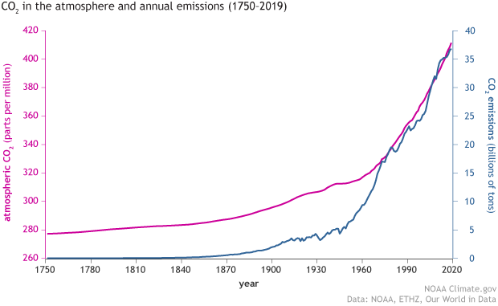
How do we know that recent CO2 increases are due to human activities?
RealClimate Simple Explanation
O’Connor
Abstract: In this work, a semi-empirical relationship of carbon dioxide emissions with atmospheric CO 2 concentrations has been developed that is capable of closely replicating observations from 1751 to 2018. The analysis was completed using data from fossil-fuel-based and land-use change based CO 2 emissions, both singly and together. Evaluation of emissions data from 1750 to 1890 yields a linear CO 2 concentration component that may be attributed to the net flux from land-use changes combined with a rapidly varying component of the terrestrial sink. This linear component is then coupled across the full-time period with a CO 2 concentration calculation using fossil-fuel combustion/cement production emissions with a single, fixed fossil-fuel combustion airborne fraction [AF FF ] value that is determined by the ocean sink coupled with the remaining slowly varying component of the land sink. The analysis of the data shows that AF FF has remained constant at 51.3% over the past 268 years. However, considering the broad range of variables including emission and sink processes influencing the climate, it may not be expected that a single value for AF FF would accurately reproduce the measured changes in CO 2 concentrations during the industrial era.
O’Connor (2020) Modeling of Atmospheric Carbon Dioxide (CO2) Concentrations as a Function of Fossil-Fuel and Land-Use Change CO2 Emissions Coupled with Oceanic and Terrestrial Sequestration (pdf) (pdf SI)
15.1.3.3 C14 Measurement
Basu
We report national scale estimates of CO2 emissions from fossil-fuel combustion and cement production in the United States based directly on atmospheric observations, using a dual-tracer inverse modeling framework and CO2 and Δ14CO2 measurements obtained primarily from the North American portion of the National Oceanic and Atmospheric Administration’s Global Greenhouse Gas Reference Network. The derived US national total for 2010 is 1,653 ± 30 TgC yr−1 with an uncertainty (1σ) that takes into account random errors associated with atmospheric transport, atmospheric measurements, and specified prior CO2 and 14C fluxes. The atmosphere-derived estimate is significantly larger (>3σ) than US national emissions for 2010 from three global inventories widely used for CO2 accounting, even after adjustments for emissions that might be sensed by the atmospheric network, but which are not included in inventory totals. It is also larger (>2σ) than a similarly adjusted total from the US Environmental Protection Agency (EPA), but overlaps EPA’s reported upper 95% confidence limit. In contrast, the atmosphere-derived estimate is within 1σ of the adjusted 2010 annual total and nine of 12 adjusted monthly totals aggregated from the latest version of the high-resolution, US-specific “Vulcan” emission data product. Derived emissions appear to be robust to a range of assumed prior emissions and other parameters of the inversion framework. While we cannot rule out a possible bias from assumed prior Net Ecosystem Exchange over North America, we show that this can be overcome with additional Δ14CO2 measurements. These results indicate the strong potential for quantification of US emissions and their multiyear trends from atmospheric observations.
Basu (2020) Estimating US fossil fuel CO2 emissions from measurements of C14 in atmospheric CO2
15.1.3.5 Turnover time
Climate Myth: CO2 has a short residence time
“[T]he overwhelming majority of peer-reviewed studies [find] that CO2 in the atmosphere remained there a short time.”
The claim goes like this:
- Predictions for the Global Warming Potential (GWP) by the IPCC express the warming effect CO2 has over several time scales; 20, 100 and 500 years.
- But CO2 has only a 5 year life time in the atmosphere.
- Therefore CO2 cannot cause the long term warming predicted by the IPCC.
This claim is false. (A) is true. (B) is also true. But B is irrelevant and misleading so it does not follow that C is therefore true.
The claim hinges on what life time means. To understand this, we have to first understand what a box model is: In an environmental context, systems are often described by simplified box models. A simple example (from school days) of the water cycle would have just 3 boxes: clouds, rivers, and the ocean.
A representation of the carbon cycle (ignore the numbers for now) would look like this one from NASA.
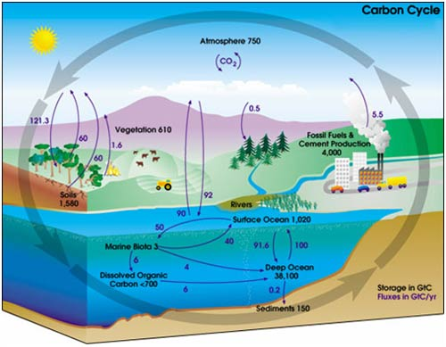
In the IPCC 4th Assessment Report glossary, “lifetime” has several related meanings. The most relevant one is:
“Turnover time (T) (also called global atmospheric lifetime) is the ratio of the mass M of a reservoir (e.g., a gaseous compound in the atmosphere) and the total rate of removal S from the reservoir: T = M / S. For each removal process, separate turnover times can be defined. In soil carbon biology, this is referred to as Mean Residence Time.”
In other words, life time is the average time an individual particle spends in a given box. It is calculated as the size of box (reservoir) divided by the overall rate of flow into (or out of) a box. The IPCC Third Assessment Report 4.1.4 gives more details.
In the carbon cycle diagram above, there are two sets of numbers. The black numbers are the size, in gigatonnes of carbon (GtC), of the box. The purple numbers are the fluxes (or rate of flow) to and from a box in gigatonnes of carbon per year (Gt/y).
A little quick counting shows that about 200 Gt C leaves and enters the atmosphere each year. As a first approximation then, given the reservoir size of 750 Gt, we can work out that the residence time of a given molecule of CO2 is 750 Gt C / 200 Gt C y-1 = about 3-4 years. (However, careful counting up of the sources (supply) and sinks (removal) shows that there is a net imbalance; carbon in the atmosphere is increasing by about 3.3 Gt per year).
It is true that an individual molecule of CO2 has a short residence time in the atmosphere. However, in most cases when a molecule of CO2 leaves the atmosphere it is simply swapping places with one in the ocean. Thus, the warming potential of CO2 has very little to do with the residence time of CO2.
What really governs the warming potential is how long the extra CO2 remains in the atmosphere. CO2 is essentially chemically inert in the atmosphere and is only removed by biological uptake and by dissolving into the ocean. Biological uptake (with the exception of fossil fuel formation) is carbon neutral: Every tree that grows will eventually die and decompose, thereby releasing CO2. (Yes, there are maybe some gains to be made from reforestation but they are probably minor compared to fossil fuel releases).
Dissolution of CO2 into the oceans is fast but the problem is that the top of the ocean is “getting full” and the bottleneck is thus the transfer of carbon from surface waters to the deep ocean. This transfer largely occurs by the slow ocean basin circulation and turn over (*3). This turnover takes 500-1000ish years. Therefore a time scale for CO2 warming potential out as far as 500 years is entirely reasonable (See IPCC 4th Assessment Report Section 2.10).
15.1.4 LNG
Howarth Abstract
Before 2016, the export of liquefied natural gas (LNG) from the United States was banned, but since that time exports have risen rapidly, fueled in part by the rapid growth in shale gas production. Today the United States is the largest exporter of LNG. This paper presents a full lifecycle assessment for greenhouse gas emissions from LNG. These emissions depend on the type of tanker used to transport the LNG, with emissions far larger when LNG is transported by older, steam-powered tankers burning heavy fuel oil. The largest source of emissions in this case is from venting of methane lost by evaporation from the storage tanks, called boil off. More modern tankers, whether powered by steam or 4-stroke or 2-stroke engines, can capture this boil-off methane and use it for their power, thereby greatly lowering methane emissions. For scenarios for LNG that is transported by more modern tankers, the single largest source of emissions in the full lifecycle are those from the production, processing, storage, and transport of the natural gas that comprises the feedstock for LNG. Fugitive emissions of unburned methane are particularly important, but so are the carbon dioxide emissions from the energy intensive processes behind modern shale gas extraction. In all of the scenarios considered, across all types of tankers used to transport LNG, methane emissions exceed emissions of carbon dioxide from the final combustion of LNG. Carbon dioxide emissions other than from this final combustion are significant, but smaller than the carbon dioxide from the final combustion. While some proponents of LNG have argued it has a climate benefit by replacing coal, the analysis presented here disproves this. Across all scenarios considered, total greenhouse gas emissions from LNG are larger than those from coal, ranging from 24% to 274% greater.
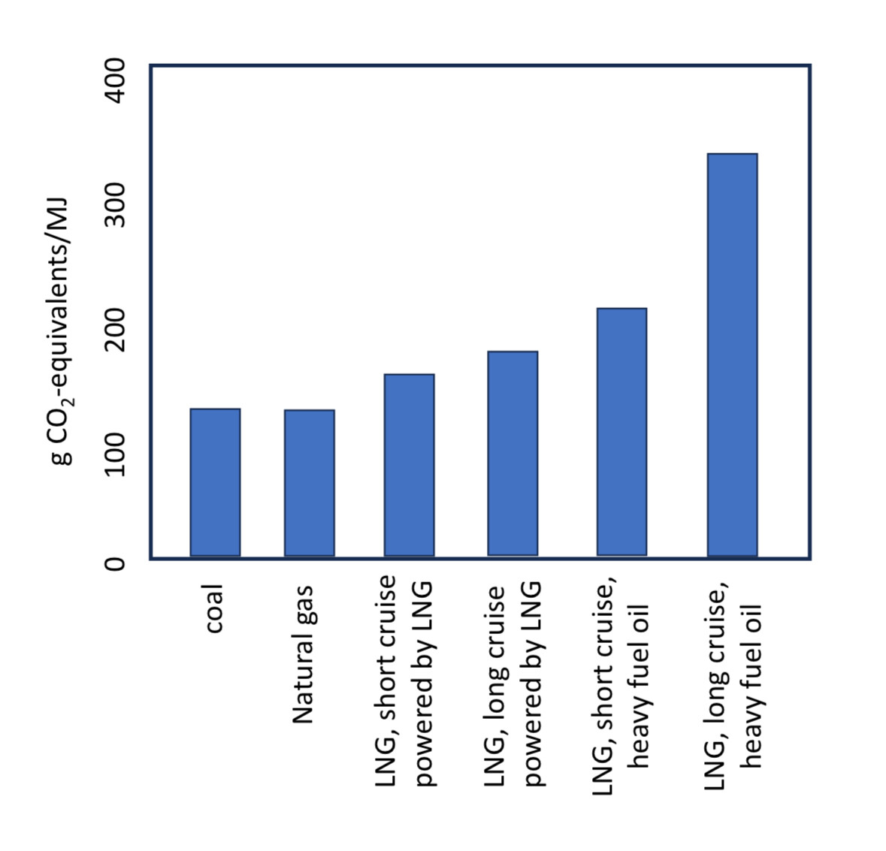
15.1.5 Carbon Cycle
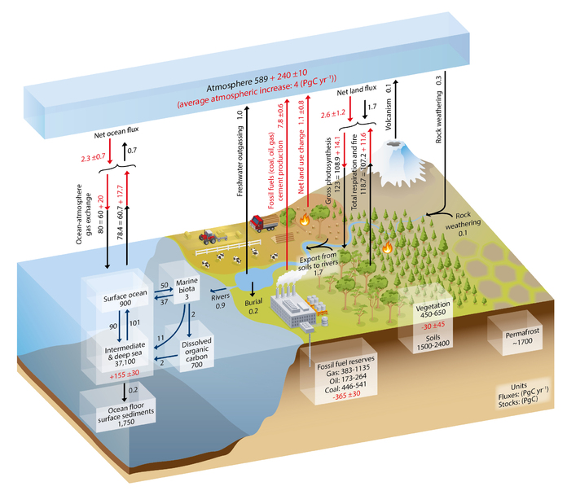
Figure: Simplified schematic of the global carbon cycle. Numbers represent reservoir mass, also called ‘carbon stocks’ in PgC (1 PgC = 10 15 gC) and annual carbon exchange fluxes (in PgC yr –1 ). Black numbers and arrows indicate reservoir mass and exchange fluxes estimated for the time prior to the Industrial Era, about 1750 (see Section 6.1.1.1 for references). Fossil fuel reserves are from GEA (2006) and are consistent with numbers used by IPCC WGIII for future scenarios. The sediment storage is a sum of 150 PgC of the organic carbon in the mixed layer (Emerson and Hedges, 1988) and 1600 PgC of the deep-sea CaCO 3 sediments available to neutralize fossil fuel CO 2 (Archer et al., 1998). Red arrows and numbers indicate annual ‘anthropogenic’ fluxes averaged over the 2000–2009 time period. These fluxes are a perturbation of the carbon cycle during Industrial Era post 1750. These fluxes (red arrows) are: Fossil fuel and cement emissions of CO 2 (Section 6.3.1), Net land use change (Section 6.3.2), and the Average atmospheric increase of CO 2 in the atmosphere, also called ‘CO 2 growth rate’ (Section 6.3). The uptake of anthropogenic CO 2 by the ocean and by terrestrial ecosystems, often called ‘carbon sinks’ are the red arrows part of Net land flux and Net ocean flux. Red numbers in the reservoirs denote cumulative changes of anthropogenic carbon over the Industrial Period 1750–2011 (column 2 in Table 6.1). By convention, a positive cumulative change means that a reservoir has gained carbon since 1750. The cumulative change of anthropogenic carbon in the terrestrial reservoir is the sum of carbon cumulatively lost through land use change and carbon accumulated since 1750 in other ecosystems (Table 6.1). Note that the mass balance of the two ocean carbon stocks Surface ocean and Intermediate and deep ocean includes a yearly accumulation of anthropogenic carbon (not shown). Uncertainties are reported as 90% confidence intervals. Emission estimates and land and ocean sinks (in red) are from Table 6.1 in Section 6.3. The change of gross terrestrial fluxes (red arrows of Gross photosynthesis and Total respiration and fires) has been estimated from CMIP5 model results (Section 6.4). The change in air–sea exchange fluxes (red arrows of ocean atmosphere gas exchange) have been estimated from the difference in atmospheric partial pressure of CO 2 since 1750 (Sarmiento and Gruber, 2006). Individual gross fluxes and their changes since the beginning of the Industrial Era have typical uncertainties of more than 20%, while their differences (Net land flux and Net ocean flux in the figure) are determined from independent measurements with a much higher accuracy (see Section 6.3). Therefore, to achieve an overall balance, the values of the more uncertain gross fluxes have been adjusted so that their difference matches the Net land flux and Net ocean flux estimates. Fluxes from volcanic eruptions, rock weathering (silicates and carbonates weathering reactions resulting into a small uptake of atmospheric CO 2 ), export of carbon from soils to rivers, burial of carbon in freshwater lakes and reservoirs and transport of carbon by rivers to the ocean are all assumed to be pre-industrial fluxes, that is, unchanged during 1750–2011. Some recent studies (Section 6.3) indicate that this assumption is likely not verified, but global estimates of the Industrial Era perturbation of all these fluxes was not available from peer-reviewed literature. The atmospheric inventories have been calculated using a conversion factor of 2.12 PgC per ppm (Prather et al., 2012).
15.1.6 Methane
The last mass extinction of life on earth, where 95% of species disappeared, was due to methane-induced rapid warming of the atmosphere (Lee, 2014; Brand et al, 2016).
Bendell (2018) Deep Adaption: A Map for Navigating Climate Tradegy (pdf)
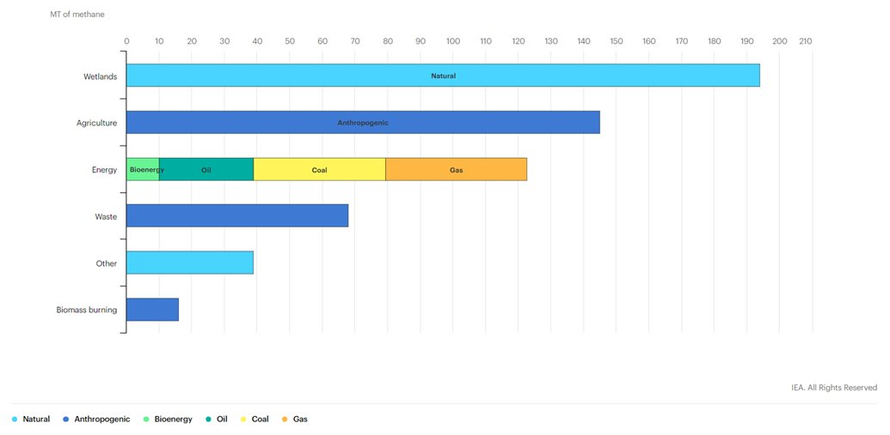
Methane, the largest component of natural gas, is sometimes called a “short-lived climate pollutant” because it remains in the atmosphere for far less time than carbon dioxide, which can remain in the atmosphere for hundreds of years. But methane is also a climate “super-pollutant,” 86 times more potent than carbon dioxide at warming the atmosphere over a 20-year period.
Sources of methane include wetlands, rice paddies, livestock, biomass burning, organic waste decomposition and fossil fuel drilling and transport.
James Hansen
The methane (CH4) growth rate[3] is shocking. A CH4 increase causes tropospheric ozone (O3) and stratospheric water vapor (H2O) to also increase. Including these indirect effects, the climate forcing by observed CH4 growth is half as large as the climate forcing by CO2.
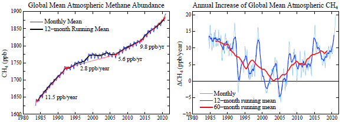
After CH4 nearly stabilized early this century, growth has returned and recently accelerated to its highest rate in the period of accurate global data, with increased growth at least in part as a result of “fracking” for gas and reliance on gas as the complement to intermittent renewable energies.
15.1.6.1 Global Methane Assessment
The Global Methane Assessment shows that human-caused methane emissions can be reduced by up to 45 per cent this decade. Such reductions would avoid nearly 0.3°C of global warming by 2045 and would be consistent with keeping the Paris Climate Agreement’s goal to limit global temperature rise to 1.5 degrees Celsius (1.5˚C) within reach.
The assessment, for the first time, integrates the climate and air pollution costs and benefits from methane mitigation. Because methane is a key ingredient in the formation of ground-level ozone (smog), a powerful climate forcer and dangerous air pollutant, a 45 per cent reduction would prevent 260 000 premature deaths, 775 000 asthma-related hospital visits, 73 billion hours of lost labour from extreme heat, and 25 million tonnes of crop losses annually.
15.1.6.2 Cut Methane Now
Methane is the biggest and really the only lever we have to slow temperature rise during the next two decades.
Methane’s potency and short atmospheric life make it a key greenhouse gas for policy makers to focus on as a way to combat global warming in the near term because the impact of those cuts will be felt almost immediately.
“If we cut methane emissions substantially during the 2020s, the abundance or concentration in the atmosphere will also drop rapidly during the 2020s,” said Drew Shindell, an earth science professor at Duke University. “If we cut CO2 emissions, it takes a long time for actual concentrations to drop, and then longer for the climate to adjust.”
15.1.6.3 Spotting Methane from Space
Methane is a key driver of climate change, with 80 times the global warming impact of carbon dioxide over a 20-year period. But methane only lingers in the atmosphere for about nine years, compared to a century for CO2.
That means reducing methane emissions from oil and gas wells and pipelines, livestock operations, landfills and other sources around the world will have an outsize impact on reducing global warming.
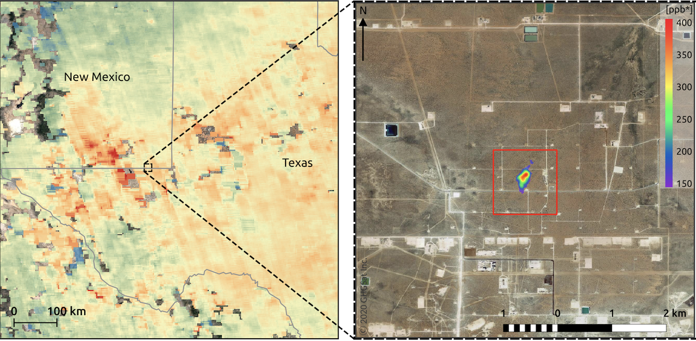
Two separate efforts to launch satellites that can scan the globe for methane emissions at a scope and level of detail not possible before, and to share their data with the public.
The first is MethaneSat, a subsidiary of the Environmental Defense Fund that is set to launch its satellite in 2022 and start delivering data in 2023. MethaneSat will be able to scan 200-kilometer-wide swaths of the earth with spectrometers that can detect methane at concentrations of 2 to 3 parts per billion, down to resolutions of about 100 meters by 400 meters. This will be the best performance of any satellite-based methane tracking technology yet launched.
In comparison, the Tropomi sensors on the European Space Agency’s Copernicus Sentinel satellite can detect about 11 parts per billion at resolutions of 7 kilometers, and the sensors on satellites operated by Canadian-based company GHGSat can capture about 55 parts per billion, albeit at much tighter spatial dimensions, down to roughly 25 meters square.
MethaneSat will be able to capture leaks as low as 5 kilograms per hour per square kilometer.
Newly released research finds that roughly half of global methane emissions can be cut over the next decade at no net cost. Of that low-cost reduction potential, 80 percent could come from the global oil and gas industries.
15.1.7 Methane Reservoir Laptev Sea
Methane bubbles regularly reach the surface of the Laptev Sea in the East Siberian Arctic Ocean (ESAO), each of them a small blow to our efforts to mitigate climate change. The source of the methane used to be a mystery, but a joint Swedish-Russian-U.S. investigation recently discovered that an ancient gas reservoir is responsible for the bubbly leaks.
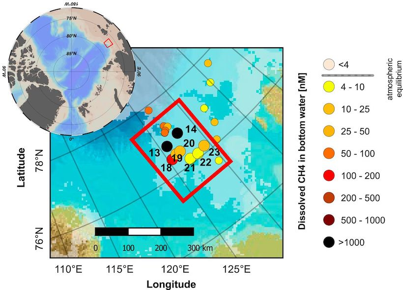
Methane in the Laptev Sea is stored in reservoirs below the sea’s submarine permafrost or in the form of methane hydrates—solid ice-like structures that trap the gas inside. It is also produced by microbes in the thawing permafrost itself. Not all of these sources are created equal: Whereas microbial methane is released in a slow, gradual process, disintegrating hydrates and reservoirs can lead to sudden, eruptive releases.
Methane is escaping as the Laptev’s submarine permafrost is thawed by the relative warmth of overlying seawater. With an even stronger greenhouse effect than carbon dioxide, methane releases into the atmosphere could substantially amplify global warming.
The source of the methane was an old reservoir, deep below the permafrost. The big finding was that we really have something that’s coming out from a deep pool. As the permafrost thaws, it opens up new pathways that allow methane to pass through. There is a risk that this methane release might increase, so it will eventually have a sizable effect on the climate.
It is quite plausible that there are other sources—the thawing permafrost or the hydrates that can be the major source of methane in other parts of this enormous system.
The permafrost is a closed lid over the seafloor that’s keeping everything in place. And now we have holes in this lid.
15.1.8 Methane-Hydrates
Ruppel Abstract
Gas hydrate, a frozen, naturally-occurring, and highly-concentrated form of methane, sequesters significant carbon in the global system and is stable only over a range of low-temperature and moderate-pressure conditions. Gas hydrate is widespread in the sediments of marine continental margins and permafrost areas, locations where ocean and atmospheric warming may perturb the hydrate stability field and lead to release of the sequestered methane into the overlying sediments and soils. Methane and methane-derived carbon that escape from sediments and soils and reach the atmosphere could exacerbate greenhouse warming. The synergy between warming climate and gas hydrate dissociation feeds a popular perception that global warming could drive catastrophic methane releases from the contemporary gas hydrate reservoir. Appropriate evaluation of the two sides of the climate-methane hydrate synergy requires assessing direct and indirect observational data related to gas hydrate dissociation phenomena and numerical models that track the interaction of gas hydrates/methane with the ocean and/or atmosphere. Methane hydrate is likely undergoing dissociation now on global upper continental slopes and on continental shelves that ring the Arctic Ocean. Many factors—the depth of the gas hydrates in sediments, strong sediment and water column sinks, and the inability of bubbles emitted at the seafloor to deliver methane to the sea-air interface in most cases—mitigate the impact of gas hydrate dissociation on atmospheric greenhouse gas concentrations though. There is no conclusive proof that hydrate-derived methane is reaching the atmosphere now, but more observational data and improved numerical models will better characterize the climate-hydrate synergy in the future.
Ruppel (2016) The interaction of climate change and methane hydrates (pdf)
15.1.9 Methane emission rates
Guardian
Methane is four times more sensitive to global warming than previously thought, a new study shows. The result helps to explain the rapid growth in methane in recent years and suggests that, if left unchecked, methane related warming will escalate in the decades to come.
The growth of this greenhouse gas – which over a 20 year timespan is more than 80 times as potent than carbon dioxide – had been slowing since the turn of the millennium but since 2007 has undergone a rapid rise, with measurements from the US National Oceanic and Atmospheric Administration recording it passing 1,900 parts a billion last year, nearly triple pre-industrial levels.
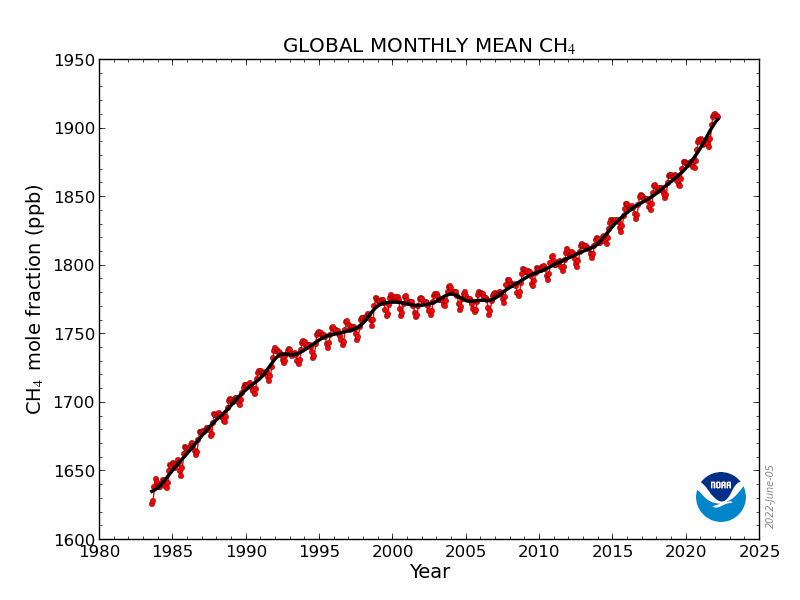
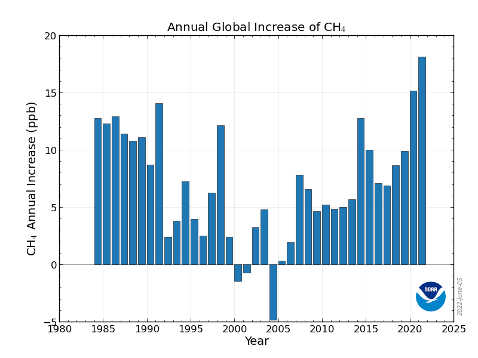
About 40% of methane emissions come from natural sources such as wetlands, while 60% come from anthropogenic sources such as cattle farming, fossil fuel extraction and landfill sites. Possible explanations for the rise in methane emissions range from expanding exploration of oil and natural gas, rising emissions from agriculture and landfill, and rising natural emissions as tropical wetlands warm and Arctic tundra melts.
But another explanation could be a slowdown of the chemical reaction that removes methane from the atmosphere. The predominant way in which methane is “mopped up” is via reaction with hydroxyl radicals (OH) in the atmosphere.
The hydroxyl radical has been termed the ‘detergent’ of the atmosphere because it works to cleanse the atmosphere of harmful trace gases,” said Redfern. But hydroxyl radicals also react with carbon monoxide, and an increase in wildfires may have pumped more carbon monoxide into the atmosphere and altered the chemical balance. “On average, a carbon monoxide molecule remains in the atmosphere for about three months before it’s attacked by a hydroxyl radical, while methane persists for about a decade. So wildfires have a swift impact on using up the hydroxyl ‘detergent’ and reduce the methane removal.
Guardian (2022) Methane much more sensitive to global heating than previously thought
Nisbet (in The Conversation)
Since 2006, the amount of heat-trapping methane in Earth’s atmosphere has been rising fast and, unlike the rise in carbon dioxide (CO₂), methane’s recent increase seems to be driven by biological emissions, not the burning of fossil fuels. This might just be ordinary variability – a result of natural climate cycles such as El Niño. Or it may signal that a great transition in Earth’s climate has begun.
the rate at which methane is increasing in the atmosphere has accelerated recently. Something like this has happened before: sudden surges in methane marked the transitions from cold ice ages to warm interglacial climates.
Methane was about 0.7 parts per million (ppm) of the air before humans began burning fossil fuels. Now it is over 1.9 ppm and rising fast. Roughly three-fifths of emissions come from fossil fuel use, farming, landfills and waste. The remainder is from natural sources, especially vegetation rotting in tropical and northern wetlands.
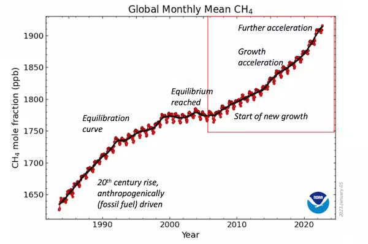
Methane is both a driver and a messenger of climate change. We don’t know why it is now rising so rapidly, but the pattern of growth since late 2006 resembles how methane behaved during great flips in Earth’s climate in the distant past.
Today’s growth seems to be driven by new emissions from wetlands, especially near the equator but perhaps also from Canada (beavers are methane factories which pull huge amounts of plant matter into ponds they’ve made) and Siberia. This is a result of climate change: increasing rainfall has made wetlands wetter and bigger while rising temperatures have boosted plant growth, providing more decomposing matter and so more methane. Emissions from huge cattle lots in tropical Africa, India and Brazil may also be rising and rotting waste in landfills near megacities like Delhi are important sources too.
Rising methane concentrations are the bellwethers of great climate-warming events. With each flip from a glacial to an interglacial climate there have been sudden, sharp rises in atmospheric methane, likely from expanding tropical wetlands.
These great climate flips that ended each ice age are known as terminations. Each has a Roman numeral, ranging from Termination IX which happened about 800,000 years ago to Termination IA which initiated the modern climate less than 12,000 years ago. For example, around 131,000 years ago during Termination II, the British climate suddenly flipped from glaciers in the Cotswolds to hippopotami wallowing in what is now Trafalgar Square.
Full terminations take several thousands of years to complete, but many include a creeping onset of warming, then a very abrupt phase of extremely rapid climate change that can take a century or less.
In the abrupt phase of the great change that brought about the modern climate, Greenland’s temperature rose by around 10°C within a few decades. During these abrupt phases, methane climbs very steeply indeed.
Methane fluctuated widely in pre-industrial times. But its increasingly rapid growth since 2006 is comparable with records of methane from the early years of abrupt phases of past termination events.
In glacial terminations, the entire climate system reorganises. In the past, this took Earth out of stable ice age climates and into warm inter-glacials. But we are already in a warm interglacial. What comes next is hard to imagine.
Roman numerals IX to I denote past great climate transitions. There is no Roman number zero, but then any future termination-scale transition will be different – a temperature step from our present interglacial climate to some new future that is warmer yet. Methane’s signal is still unclear, but the question remains: has Termination Zero begun?
Nisbet Abstract
Atmospheric methane’s rapid growth from late 2006 is unprecedented in the observational record. Assessment of atmospheric methane data attributes a large fraction of this atmospheric growth to increased natural emissions over the tropics, which appear to be responding to changes in anthropogenic climate forcing. Isotopically lighter measurements of urn:x-wiley:08866236:media:gbc21450:gbc21450-math-0001 are consistent with the recent atmospheric methane growth being mainly driven by an increase in emissions from microbial sources, particularly wetlands. The global methane budget is currently in disequilibrium and new inputs are as yet poorly quantified. Although microbial emissions from agriculture and waste sources have increased between 2006 and 2022 by perhaps 35 Tg/yr, with wide uncertainty, approximately another 35–45 Tg/yr of the recent net growth in methane emissions may have been driven by natural biogenic processes, especially wetland feedbacks to climate change. A model comparison shows that recent changes may be comparable or greater in scale and speed than methane’s growth and isotopic shift during past glacial/interglacial termination events. It remains possible that methane’s current growth is within the range of Holocene variability, but it is also possible that methane’s recent growth and isotopic shift may indicate a large-scale reorganization of the natural climate and biosphere is under way.
Nisbet Key Points
The rapid growth in the atmospheric methane burden that began in late 2006 is very different from methane’s past observational record
Recent studies point to strongly increased emissions from wetlands, especially in the tropics
This increase is comparable in scale and speed to glacial/interglacial terminations when the global climate system suddenly reorganized
Nisbet Plain Language Summary
Atmospheric methane’s unprecedented current growth, which in part may be driven by surging wetland emissions, has strong similarities to ice core methane records during glacial-interglacial “termination” events marking global reorganizations of the planetary climate system. Here we compare current and termination-event methane records to test the hypothesis that a termination-scale change may currently be in progress
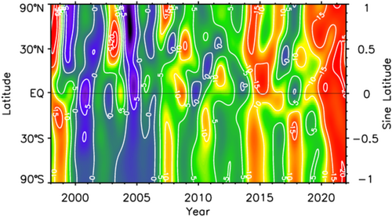
Fig: Methane growth rate averaged by latitudinal zone, from 2000 through 2021, updated from NOAA data. Red “warm” colors—growth. Blue “cool” colors—decline. The vertical axis denotes the sine of latitude, which weights each latitude band by its atmospheric mass. The Inter-Tropical Convergence Zone migrates seasonally from roughly 30°N to 30°S (sine latitude 0.5 to −0.5), while the Arctic zone is the band north of sine latitude 0.91. The current growth event began in late 2006. Note the remarkable growth since 2020. Data from https://gml.noaa.gov/aftp/data/trace_gases/ch4c13/flask/surface/.
Nisbet Memo
15.1.10 Methane (other)
Guardian
Another setback has arisen in the attempt to neutralise methane as it escapes from beneath melting Arctic ice. Methane bubble plumes are increasingly being seen in the Arctic, and Wadhams is frustrated that the Intergovernmental Panel on Climate Change (IPCC) has not yet accepted his theory that, as the ice melts, we could face a catastrophic escape of methane that has been stored for 20,000 years. Estimates, he says, range from 50 to 700 gigatonnes, which could “cause maybe a degree [centigrade] of warming, more or less instantly”, bringing forward by 15–35 years the average date at which the global mean temperature rise exceeds 2°C above pre-industrial levels.
The best geoengineering prevention for that relies, again, on the ocean. “If you blow a fine powder, or aerosol, of an iron salt called ferric chloride over the sea surface in the place where methane is bubbling out, it reacts with the methane, producing ferric hydroxide, which dissolves in the water,” he says.
Frustratingly for the theory’s backers, a test voyage this year by the University of Copenhagen found no evidence that it could work efficiently enough to remove the required amounts of the gas.
Kolbert
Sudd - South Sudan methane Sump
Starting in 2007, for example, methane levels in the atmosphere took an unexpected jump. Methane is a far more potent greenhouse gas than CO2, so scientists were alarmed. They eventually figured out, on the basis of the methane’s isotopic composition, that the source of the increase couldn’t be fossil-fuel production, even though oil and gas wells often leak methane into the air. Instead, the culprit must be microbes, either the sort that live in a marsh or the sort that live in a cow’s gut. Recent research suggests that the bulk of the extra methane is coming from the Sudd, a huge wetland in South Sudan, and that warming itself is responsible for the uptick in microbial activity. If that’s the case, then a spiral is likely to ensue: more methane will produce more warming, which will produce yet more methane, and so on.
15.1.11 Methane - Wetland Feedback
Peng Abstract
Atmospheric methane growth reached an exceptionally high rate of 15.1 ± 0.4 parts per billion per year in 2020 despite a probable decrease in anthropogenic methane emissions during COVID-19 lockdowns 1 . Here we quantify changes in methane sources and in its atmospheric sink in 2020 compared with 2019. We find that, globally, total anthropogenic emissions decreased by 1.2 ± 0.1 teragrams of methane per year (Tg CH 4 yr −1 ), fire emissions decreased by 6.5 ± 0.1 Tg CH 4 yr −1 and wetland emissions increased by 6.0 ± 2.3 Tg CH 4 yr −1 . Tropospheric OH concentration decreased by 1.6 ± 0.2 per cent relative to 2019, mainly as a result of lower anthropogenic nitrogen oxide (NO x ) emissions and associated lower free tropospheric ozone during pandemic lockdowns 2 . From atmospheric inversions, we also infer that global net emissions increased by 6.9 ± 2.1 Tg CH 4 yr −1 in 2020 relative to 2019, and global methane removal from reaction with OH decreased by 7.5 ± 0.8 Tg CH 4 yr −1 . Therefore, we attribute the methane growth rate anomaly in 2020 relative to 2019 to lower OH sink (53 ± 10 per cent) and higher natural emissions (47 ± 16 per cent), mostly from wetlands. In line with previous findings 3,4 , our results imply that wetland methane emissions are sensitive to a warmer and wetter climate and could act as a positive feedback mechanism in the future. Our study also suggests that nitrogen oxide emission trends need to be taken into account when implementing the global anthropogenic methane emissions reduction pledge 5 .
Peng (2022) Wetland emission and atmospheric sink changes explain methane growth in 2020 (pdf)
15.1.12 Methane Removal
Pyzik
a group of researchers from California University Long Beach are proposing a method of removing methane by using a group of bacteria known as methanotrophs to naturally convert methane to carbon dioxide and biomass. All the bacteria in this group ‘eat’ methane, removing it from air and converting part of it to cells as a source of sustainable protein. A strain of bacteria within this group called methylotuvimicrobium buryatense 5GB1C that can remove methane efficiently even when it is present in lower amounts.
Typically, this group of bacteria thrive in environments with high levels of methane (between 5,000 and 10,000 parts per million (ppm)). The normal concentrations in our atmosphere have much lower levels of only about 1.9 ppm of methane. But certain areas such as landfills, rice fields and oilwells emit higher concentrations of about 500 ppm.
The strain’s high methane consumption rate is probably due to a low energy requirement and greater attraction for methane – more than five times more than that of other bacteria. The bacteria oxidise the methane to CO2. The biggest barrier to implementation now is technical: we need to increase the methane treatment unit 20-fold. To implement methane-eating bacteria on a mass scale, thousands of high-functioning reactors will be needed.
Any emissions reduction strategies that enhance bacterial activity in natural communities may also result in increased nitrous oxide (N2O) emission, which has 10 times the global heating potential than that of methane. Critically, this methanotrophic bacteria-based technology does not produce nitrous oxide emissions.
Recent projections predicted that global heating can be reduced 0.21C to 0.22C by removing 0.3 to 1 petagrams of methane by 2050.
Pyzik (2023) Bacteria that ‘eat’ methane could slow global heating
15.1.13 Hydrogen (Leakage)
EDF
RMI
RMI (2022) Hydrogen Reality Check #1: Hydrogen Is Not a Significant Warming Risk
Fan
Fan (2022) Hydrogen Leakage: A Potential Risk for the Hydrogen Economy
Ocko Abstract Given the urgency to decarbonize global energy systems, governments and industry are moving ahead with efforts to increase deployment of hydrogen technologies, infrastructure, and applications at an unprecedented pace, including USD billions in national incentives and direct investments. While zero- and low-carbon hydrogen hold great promise to help solve some of the world’s most pressing energy challenges, hydrogen is also an indirect greenhouse gas whose warming impact is both widely overlooked and underestimated. This is largely because hydrogen’s atmospheric warming effects are short-lived – lasting only a couple decades – but standard methods for characterizing climate impacts of gases consider only the long-term effect from a one-time pulse of emissions. For gases whose impacts are short-lived, like hydrogen, this long-term framing masks a much stronger warming potency in the near to medium term. This is of concern because hydrogen is a small molecule known to easily leak into the atmosphere, and the total amount of emissions (e.g., leakage, venting, and purging) from existing hydrogen systems is unknown. Therefore, the effectiveness of hydrogen as a decarbonization strategy, especially over timescales of several decades, remains unclear. This paper evaluates the climate consequences of hydrogen emissions over all timescales by employing already published data to assess its potency as a climate forcer, evaluate the net warming impacts from replacing fossil fuel technologies with their clean hydrogen alternatives, and estimate temperature responses to projected levels of hydrogen demand. We use the standard global warming potential metric, given its acceptance to stakeholders, and incorporate newly published equations that more fully capture hydrogen’s several indirect effects, but we consider the effects of constant rather than pulse emissions over multiple time horizons. We account for a plausible range of hydrogen emission rates and include methane emissions when hydrogen is produced via natural gas with carbon capture, usage, and storage (CCUS) (“blue” hydrogen) as opposed to renewables and water (“green” hydrogen). For the first time, we show the strong timescale dependence when evaluating the climate change mitigation potential of clean hydrogen alternatives, with the emission rate determining the scale of climate benefits or disbenefits. For example, green hydrogen applications with higher-end emission rates (10 %) may only cut climate impacts from fossil fuel technologies in half over the first 2 decades, which is far from the common perception that green hydrogen energy systems are climate neutral. However, over a 100-year period, climate impacts could be reduced by around 80 %. On the other hand, lower-end emissions (1 %) could yield limited impacts on the climate over all timescales. For blue hydrogen, associated methane emissions can make hydrogen applications worse for the climate than fossil fuel technologies for several decades if emissions are high for both gases; however, blue hydrogen yields climate benefits over a 100-year period. While more work is needed to evaluate the warming impact of hydrogen emissions for specific end-use cases and value-chain pathways, it is clear that hydrogen emissions matter for the climate and warrant further attention from scientists, industry, and governments. This is critical to informing where and how to deploy hydrogen effectively in the emerging decarbonized global economy.
15.2 Aerosols
Hansen
The global warming acceleration is due to the one huge climate forcing that we have chosen not to measure: the forcing caused by imposed changes of atmospheric aerosols.
It’s a shame that we are not measuring the aerosol climate forcing to take advantage of this vast geophysical experiment to improve our understanding. The human-made aerosol forcing is almost as large as the CO2 forcing, but it is of the opposite sign, i.e., aerosols cause cooling.
Aerosols cause cooling by reflecting sunlight to space, thus by itself an increase of aerosols causes a temporary energy imbalance – more energy going out than coming in. Earth restores energy balance by cooling off, thus reducing heat radiation to space.
The aerosol climate forcing is complex, as the largest part of their effect seems to be via their role as cloud condensation nuclei. Added condensation nuclei tend to make the average cloud particle smaller; that tends to make brighter, longer-lived clouds, but it’s a complicated story.
We have so far only felt a fraction of the eventual warming due to the presumed decrease of aerosols of the past several years.
in the absence of adequate aerosol measurements – let’s use Earth’s measured energy imbalance to estimate the impact of aerosol reductions on global warming. Earth’s energy imbalance is measured to a good accuracy via precise monitoring of the rising global ocean temperature because the ocean is the repository for about 90 percent of the excess energy. Von Schuckmann et al. (2020)[4] report that the average imbalance over the period 1971-2018 was 0.47 ±0.1 W/m2, but in period 2010-2018 the imbalance was 0.87 ±0.1 W/m2.
Additional information on the energy imbalance is provided by combining the absolute calibration provided by measuring the change in the ocean heat content with the spatial and temporal information provided by satellite-borne radiometers. The CERES (Clouds and the Earth’s Radiant Energy System) instruments[5] measure outgoing radiation – both reflected sunlight and emitted terrestrial heat radiation. CERES cannot measure the tiny imbalance between the incoming and outgoing fluxes of radiation, but the stability of its sensors is sufficient to infer valuable information about the planet’s energy imbalance.
Specifically, the CERES data – in addition to having temporal variation of Earth’s energy imbalance consistent with the ocean data of von Schuckmann et al. – show that most of the increased imbalance since 2015 is due to an increase of absorbed solar energy, i.e., a decrease in Earth’s reflectivity. That is consistent with the expectation that the largest effect of aerosols on Earth’s radiation balance and climate is via their effect on clouds.
We can only infer that Earth’s energy imbalance – which was less than or about half a watt per square meter during 1971-2015 – has approximately doubled to about 1 W/m2 since 2015. This increased energy imbalance is the cause of global warming acceleration. We should expect the global warming rate for the quarter of a century 2015-2040 to be about double the 0.18°C/decade rate during 1970-2015.
Hansen (2021) July 2021 temp Update
Faustian Bargain
Hansen
The role of aerosols in climate change is uncertain because aerosol properties are not measured well enough to define their climate forcing. Aerosol impact is suggested by the gap between observed global warming and expected warming due to GHGs based on ECS inferred from paleoclimate.
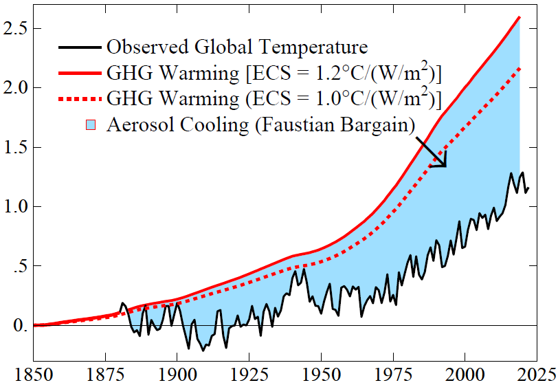
Fig: Observed global surface temperature (black line) and expected GHG warming with two choices for ECS. The blue area is the estimated aerosol cooling effect. The temperature peak in the World War II era is in part an artifact of inhomogeneous ocean data in that period.
Our best estimate for ECS, 1.2°C per W/m 2 , yields a gap of 1.5°C between expected and actual warming in 2022. Aerosols are the likely cooling source. The other negative forcing discussed by IPCC – surface albedo change – is estimated by IPCC to be –0.12 ± 0.1 W/m 2 , an order of magnitude smaller than aerosol forcing.
Absence of global warming over the 70-year period 1850-1920 (Fig. SPM.1 of IPCC AR6 WG1 report) is a clue about aerosol forcing. GHG forcing increased 0.54 W/m 2 in 1850-1920, which causes an expected warming ~0.4°C by 1920 for ECS = 1°C per W/m2 . Natural forcings – solar irradiance and volcanic aerosols – might contribute to lack of warming, but no persuasive case has been made for the required downward trends of those forcings. Human-made aerosols are the likely offset of GHG warming. Such aerosol cooling is a Faustian bargain because payment in enhanced global warming will come due once we can no longer tolerate the air pollution. Ambient air pollution causes millions of deaths per year, with particulates most responsible.
The mystery is the absence of warming in the past 6,000 years. Aerosol cooling could have offset GHG warming. Growing population, agriculture and land clearance produced aerosols and CO2 ; wood was the main fuel for cooking and heating. Nonlinear aerosol forcing is largest in a pristine atmosphere, so it is unsurprising that aerosols tended to offset CO2 warming as civilization developed.
Global aerosols are not monitored with detail needed to define aerosol climate forcing. IPCC 13 estimates forcing from assumed precursor emissions, a herculean task due to many aerosol types and complex cloud effects. Aerosol forcing uncertainty is comparable to its estimated value.
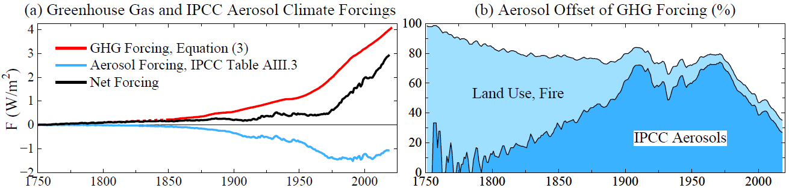
Fig: (a) Estimated greenhouse gas and aerosol forcings relative to 1750 values. (b) Aerosol forcing as percent of GHG forcing. Forcings for dark blue area are relative to 1750. Light blue area adds 0.5 W/m2 forcing estimated for human-caused aerosols from fires, biofuels and land use.
If human-made aerosol forcing was – 0.5 W/m2 by 1750, offsetting +0.5 W/m2 GHG forcing, this forcing should be included. Such aerosol forcing – largely via effects of land use and biomass fuels on clouds – continues today. Thirty million people in the United States use wood for heating. Such fuels are also common in Europe and much of the world.
IPCC aerosol forcing slowly becomes important relative to GHG forcing. Civilization always produced aerosols as well as GHGs. As sea level stabilized, organized societies and population grew as coastal biologic productivity increased and agriculture developed. Wood was the main fuel.
Aerosolstravel great distances, as shown by Asian aerosols in North America. Humans contributed to both rising GHG and aerosol climate forcings in the past 6,000 years. One result is that human-caused aerosol climate forcing is at least 0.5 W/m2 more than usually assumed. Thus, the Faustian payment that will eventually come due is also larger.
Recent global warming does not yield a unique ECS because warming depends on three major unknowns with only two basic constraints. Unknowns are ECS, net climate forcing (aerosol forcing is unmeasured), and ocean mixing (many ocean models are too diffusive). Constraints are observed global temperature change and Earth’s energy imbalance (EEI). Many climate models compensate for excessive ocean mixing (which reduces surface warming) by using aerosol forcing less negative than the real world, thus achieving realistic surface warming. This issue is unresolved and complicated by the finding that cloud feedbacks can buffer ocean heat uptake, affecting interpretation of EEI.
IPCC reports may have gravitated toward climate sensitivity near 3°C for 2×CO2 in part because of difficulty that models have in realistically simulating amplifying cloud feedbacks and a climate model tendency for excessive mixing of heat into the deep ocean.
The great inadvertent aerosol experiment
Sulfate aerosols are cloud condensation nuclei (CCN), so sulfate emissions by ships result in a larger number of smaller cloud particles, thus affecting cloud albedo and cloud lifetime. Ships provide a large percentage of sulfates in the North Pacific and North Atlantic regions. It has been suggested that cooling by these clouds is overestimated because of cloud liquid water adjustments, but liquid water path (LWP) effects are substantial even in regions without visible ship-tracks. Sulfate indirect aerosol forcing is estimated to -1.11 ± 0.43 W/m2 over the global ocean.
Changes of IMO emission regulations provide a great opportunity for insight into aerosol climate forcing. Sulfur content of fuels was limited to 1% in 2010 near the coasts of North America and in the North Sea, Baltic Sea and English Channel, and further restricted there to 0.1% in 2015. In 2020 a limit of 0.5% was imposed worldwide. The 1% limit did not have a noticeable effect on ship-tracks, but a striking reduction of ship-tracks was found after the 2015 IMO regulations, especially in the regions near land where emissions were specifically limited. Following the additional 2020 regulations, global ship-tracks were reduced more than 50%.
Earth’s albedo (reflectivity) measured by CERES (Clouds and Earth’s Radiant Energy System) satellite-borne instruments over the 22-years March 2000 to March 2022 reveal a decrease of albedo and thus an increase of absorbed solar energy coinciding with the 2015 change of IMO emission regulations. Global absorbed solar energy is +1.05 W/m 2 in the period January 2015 through December 2022 relative to the mean for the first 10 years of data. Increased solar energy absorption occurred despite 2015-2020 being the declining phase of the ~11-year solar irradiance cycle.
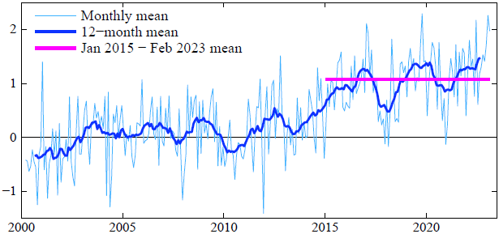
Fig: Global absorbed solar radiation (W/m 2 ) relative to mean of the first 120 months of CERES data. CERES data are available at http://ceres.larc.nasa.gov/order_data.php
Given the large increase of absorbed solar energy, cloud changes are likely the main cause. Potential causes of the cloud changes include: 1) reduced aerosol forcing, 2) cloud feedbacks to global warming, 3) natural variability. Climate models predict a reduction of cloud albedo in this region as a feedback effect driven by global warming. Continued monitoring of absorbed energy can confirm the reality of the change, but without global monitoring of detailed physical properties of aerosols and clouds, it will be difficult to apportion observed change among the candidate causes.
Hansen (2023) PipelinePaper230705 (pdf)
Simons
The Northern Hemisphere mid latitude Sea Surface Temperatures have gone through the roof since the shipping desulphurization regulations came into effect on January 1st, 2020.
This is clearly visible when looking at the 12-month (Oct-Sept) trend.
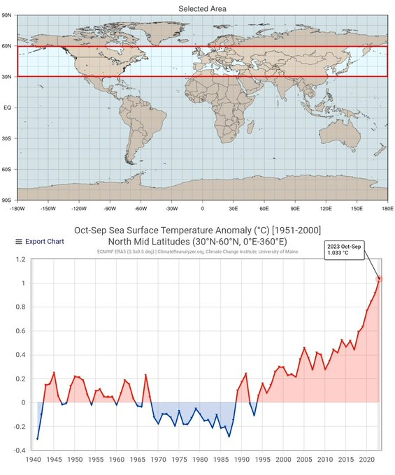
15.3 Ozone Layer
15.3.1 Artic Ozone Hole
Berwyn
The ozone layer, Earth’s protection against intense ultraviolet radiation, is at risk, despite the progress made in protecting atmospheric ozone by the 1987 Montreal Protocol.
Warming of the surface of the Arctic is matched by a colder polar vortex high in the atmosphere, which is speeding the breakdown of the Earth’s shield against ultraviolet rays.
As greenhouse gases heated the surface of the planet, the researchers said, they have also, during the past 50 years, cooled the upper layers of the atmosphere over the Arctic. In the colder stratosphere, long-lived pollutants like chlorofluorocarbons and halons from refrigerants and industrial solvents break down and release chlorine and bromine, which react with sunlight to destroy ozone.
Concentrations of those pollutants in the atmosphere have decreased by about 10 percent since the ban, allowing the ozone layer above Antarctica to heal over the past 20 years, but progressively colder temperatures in the stratosphere above the Arctic are increasing the destruction of ozone in that region
Berwyn (2020) Ozone Alarm in the High North - InsideClimateNews
von der Gathen - Abstract
Chemical loss of Arctic ozone due to anthropogenic halogens is driven by temperature, with more loss occurring during cold winters favourable for formation of polar stratospheric clouds (PSCs). We show that a positive, statistically significant rise in the local maxima of PSC formation potential (PFPLM) for cold winters is apparent in meteorological data collected over the past half century. Output from numerous General Circulation Models (GCMs) also exhibits positive trends in PFPLM over 1950 to 2100, with highest values occurring at end of century, for simulations driven by a large rise in the radiative forcing of climate from greenhouse gases (GHGs). We combine projections of stratospheric halogen loading and humidity with GCM-based forecasts of temperature to suggest that conditions favourable for large, seasonal loss of Arctic column O3 could persist or even worsen until the end of this century, if future abundances of GHGs continue to steeply rise.
von der Gathen (2021) Climate change favours large seasonal loss of Arctic ozone
15.4 Stratosphere shrinking
The thickness of the atmospheric layer has contracted by 400 metres since the 1980s, the researchers found, and will thin by about another kilometre by 2080 without major cuts in emissions. The changes have the potential to affect satellite operations, the GPS navigation system and radio communications.
The discovery is the latest to show the profound impact of humans on the planet. In April, scientists showed that the climate crisis had shifted the Earth’s axis as the massive melting of glaciers redistributes weight around the globe.
The stratosphere extends from about 20km to 60km above the Earth’s surface. Below is the troposphere, in which humans live, and here carbon dioxide heats and expands the air. This pushes up the lower boundary of the stratosphere. But, in addition, when CO2 enters the stratosphere it actually cools the air, causing it to contract.
Pisoft Abstract
Rising emissions of anthropogenic greenhouse gases (GHG) have led to tropospheric warming and stratospheric cooling over recent decades. As a thermodynamic consequence, the troposphere has expanded and the rise of the tropopause, the boundary between the troposphere and stratosphere, has been suggested as one of the most robust fingerprints of anthropogenic climate change. Conversely, at altitudes above ~55 km (in the mesosphere and thermosphere) observational and modeling evidence indicates a downward shift of the height of pressure levels or decreasing density at fixed altitudes. The layer in between, the stratosphere, has not been studied extensively with respect to changes of its global structure. Here we show that this atmospheric layer has contracted substantially over the last decades, and that the main driver for this are increasing concentrations of GHG. Using data from coupled chemistry-climate models we show that this trend will continue and the mean climatological thickness of the stratosphere will decrease by 1.3 km following representative concentration pathway 6.0 by 2080. We also demonstrate that the stratospheric contraction is not only a response to cooling, as changes in both tropopause and stratopause pressure contribute. Moreover, its short emergence time (less than 15 years) makes it a novel and independent indicator of GHG induced climate change.
15.5 Contrails
Pearce
New research shows that condensation trails from aircraft exhaust are playing a significant role in global warming. Experts are concerned that efforts to change aviation engine design to reduce CO2 emissions could actually create more contrails and raise daily temperatures even more.
Like regular cirrus clouds, contrail clouds trap heat radiating from the earth’s surface, causing warming in the air below.
Contrails are human-made clouds. They form in air above about 25,000 feet, when that air is moist and colder than -40 degrees Celsius. Like regular clouds, they arise when water vapor, in this case from the engine exhausts, forms into droplets by condensing onto particles in the air, in this case soot from the engines. Within a second, the water droplets freeze to make tiny ice crystals that show up visually as contrails.
If the air is not cool or moist enough, contrails may not form or may disappear quickly. But at other times, they stick around – either as tight, white lines in the sky, like chalk marks, or gradually spreading to create thin layers of ice clouds. They are similar to natural cirrus clouds and are often called contrail cirrus clouds.
Contrail cirrus clouds cover around 0.6 percent of the global skies at any one time — nine times the amount covered by contrails themselves. In areas with high amounts of air traffic, they can merge to cover as much as 38,000 square miles, roughly the size of Indiana, and last for many hours or even days.
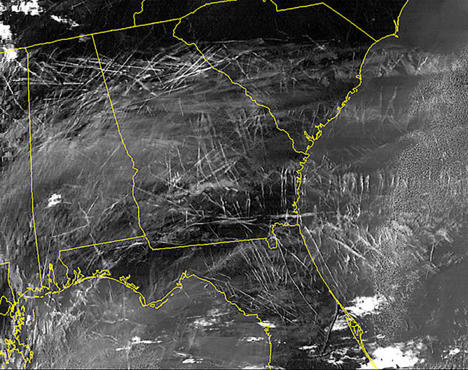
Like regular cirrus clouds, contrail cirrus clouds have two competing effects on climate. They shade us by reflecting incoming sunlight back into space. But they also trap heat radiating from the earth’s surface, so causing warming in the air below.
During the day, cooling compensates part of the warming. But at night, with no sunlight, only the warming effect operates. Red-eye flights are a red light for climate.
The average effect on the earth’s radiation balance of contrails and contrail cirrus is 50 milliwatts per square meter of the earth’s surface. The figure is for 2006, the base year for the U.S. Federal Aviation Administration dataset used by the authors. It was double the 24 milliwatts from the CO2 that had accumulated in the atmosphere from a century of aviation (and is a significant part of a total anthropogenic effect at the time of around 1,600 milliwatts).
One is to divert aircraft away from air where contrails are likely to form. This can be done vertically by changing altitude, or horizontally by detouring around the problem air. But aircraft currently fly the shortest routes and at altitudes that minimize fuel burn …controlling contrail formation in this way… will almost certainly lead to increases in aircraft CO2 emissions.
A second approach to minimizing contrails is to change fuels — from kerosene-based fuels to biofuels, hydrogen, liquid natural gas, or even electricity.
Even if fuel changes reduce soot emissions, researchers estimate contrail production will increase by a factor of 2.8 by 2050.
Pearce (2019) Airplane Contrails make Planet warmer
Canary Media
It has long been unclear just how much contrails contribute to climate change. But recent research has shed more light on the issue. A 2020 study by the European Union found that contrails and other non-CO2 aircraft emissions warm the planet twice as much as the carbon dioxide released by airplanes. And a 2021 study found that, while aviation contributes about 2.4 percent of global annual CO2 emissions, flying is actually responsible for 4 percent of global warming when all factors are included.
Canary Media (2022) Major airlines are teaming up to tackle planet-warming plane contrails
Klöwer (2021) Quantifying aviation’s contribution to global warming
Transport and Environment
The report recommends using clean fuels to reduce the amount of pollutants released by jets and changing flight paths to fly at lower altitude, where contrail formation is avoided. The scientists note that rerouting less than 2% of flights in Japan had reduced the warming effect of contrails by nearly 60%.[2] The report also says the EU could require the blending of e-fuels into all jet fuel sold in European countries.
T&E said the EU cannot afford to wait five to eight years to implement these measures, as the report proposes, and that they need to be included in the Commission’s upcoming Sustainable and Smart Mobility Strategy, due in December. Contrail avoidance also needs to be prioritised in the revision of the Single European Sky, given its potential to deliver substantial cuts to aviation’s climate impact. Pricing for non-CO2 emissions will also be needed to incentivise airlines to use eco-friendly flight paths.
Transport and Environment (2020) Airline contrails warm the planet twice as much as CO2
15.6 Clouds
Ceppi Significance
A key challenge of our time is to accurately estimate future global warming in response to a doubling of atmospheric carbon dioxide—a number known as the climate sensitivity. This number is highly uncertain, mainly because it remains unclear how clouds will change with warming. Such changes in clouds could strongly amplify or dampen global warming, providing a climate feedback. Here, we perform a statistical learning analysis that provides a global observational constraint on the future cloud response. This constraint supports that cloud feedback will amplify global warming, making it very unlikely that climate sensitivity is smaller than 2 °C.
Ceppi Abstract
Global warming drives changes in Earth’s cloud cover, which, in turn, may amplify or dampen climate change. This “cloud feedback” is the single most important cause of uncertainty in Equilibrium Climate Sensitivity (ECS)—the equilibrium global warming following a doubling of atmospheric carbon dioxide. Using data from Earth observations and climate model simulations, we here develop a statistical learning analysis of how clouds respond to changes in the environment. We show that global cloud feedback is dominated by the sensitivity of clouds to surface temperature and tropospheric stability. Considering changes in just these two factors, we are able to constrain global cloud feedback to 0.43 ± 0.35 W⋅m−2⋅K−1 (90% confidence), implying a robustly amplifying effect of clouds on global warming and only a 0.5% chance of ECS below 2 K. We thus anticipate that our approach will enable tighter constraints on climate change projections, including its manifold socioeconomic and ecological impacts.
Ceppi (2021) Observational evidence that cloud feedback amplifies global warming
Simmons
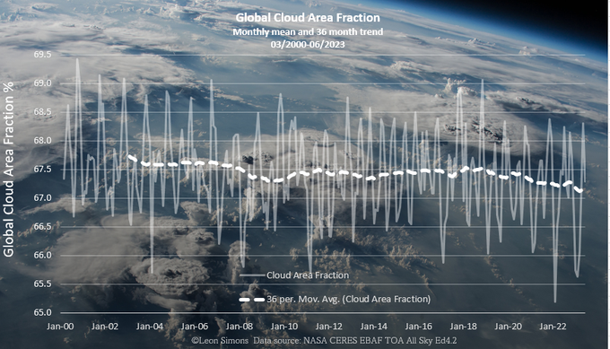
Loeb
Satellite and in situ observations independently show an approximate doubling of Earth’s Energy Imbalance (EEI) from mid-2005 to mid-2019.
Marked decreases in clouds and sea-ice and increases in trace gases and water vapor combine to increase the rate of planetary heat uptake.
Robust decreases in low and middle cloud amounts observed in both hemisphere.
Ocean vertical mixing appears to be main driver of global changes in SST.
15.7 Attributing Emissions
15.7.1 Norway’s Responsibility
In real life responsibility is more than what is legally bindingThe emissions of CO2 that occur within Norway’s territory are dwarfed by the emissions that result from combustion of all the oil and gas Norway produces. Because these fossil fuels are exported before being combusted, the emissions are allocated to the accounts of other countries. If Norway had generated electricity from the gas and then exported the electricity, for example, then emissions from that electricity generation would be allocated to Norway’s accounts. There is therefore an element of artificiality associated with this allocation. It takes two to tango.
Norway’s territorial emissions of CO2 were about 42 Mt in 2019, and over 1971–2019 totalled about 1.9 Gt. In comparison, emissions from Norwegian oil and gas since 1971 have been about 16 Gt. A similar amount (~15 Gt) will be emitted if all remaining Norwegian oil and gas resources are extracted from the continental shelf.
In 2019, emissions from Norwegian oil and gas amounted to 84 tonnes of CO2 for every person in Norway.

Norways Export Emissions (Robbie Andrew)
In Norwegian politics, there’s been a very successful attempt to separate the discussion of oil policy from the discussion of climate policy. The two were never really tightly linked [in the country] until roughly the last decade, and this division has become increasingly difficult to maintain.
Norwegian politicians also haven’t been alone in creating the conditions that made this division possible. They’ve been helped immensely by the international climate regime.
From the very beginning of international climate policy, there was this agreement that countries had to account for the emissions that they create when they burn fossil fuels. All the responsibility was placed on the demand side, not the supply side, which was very convenient for Norway.
Europe is the primary market for Norway’s oil and gas. But determining the climate effects of Norwegian production is not straightforward. One study has estimated a clear climate benefit from reducing oil output, but the market is complex and the result really depends on your assumptions about how other actors will behave and how the market will evolve over time.
The big irony here is that Norway is a fairly large fossil-fuel producer, but we use relatively few fossil fuels directly in our energy use. Nearly all of our electricity has for a long time come from hydropower. In most years, we even export quite a lot of renewable electricity to our neighbors. The only place where fossil fuels are used to directly produce energy is to run the platforms offshore. They use gas to run the turbines to get the energy needed for oil and gas production.
The government’s new climate plan, which was unveiled just a few days ago, does include a number of new and more aggressive measures to reduce Norway’s domestic emissions. The proposal to increase the already quite high CO2 tax on offshore emissions came as something of a surprise, and it is likely to pass even if it is currently being challenged by the industry.
However, it is important to keep in mind that this proposal only targets the production-related emissions of Norwegian oil, not the level of oil that is being extracted and exported. As such, it is in line with the historical separation between climate and oil policymaking, which tends to focus only on emissions happening within Norway and exclude any concern for the climate impact of exported oil and gas.
The Norwegian paradox has worked out fairly well up until the last few years because there has been little focus on the production of fossil fuels, and because Norway is small enough to avoid the scrutiny that some larger nations face. But this is quickly changing, both in the domestic and international political discussion.
There is now a lot more focus on the supply side of fossil fuels than 10 years ago, with several countries like Denmark announcing an end to drilling and new research showing a mismatch between planned fossil-fuel production and ideas such as a “non-proliferation treaty” for fossil fuels being floated. The treaty would bring the world together in agreeing to end the use of fossil fuels much like the UN came together to curb the spread of nuclear weapons.
This will make it increasingly hard for Norway to hold on to a leadership claim as long as oil production keeps being expanded into new areas.
15.7.2 Global North vs South Responsibility
The global North is responsible for 92% of total excess carbon dioxide emissions. Climate breakdown is colonial in character and ultimately requires an anti-colonial struggle in response. (Jason Hickel)

Fig. by (AndrewFanning?)
15.7.3 Concrete / Cement
CanaryMedia
Concrete is everywhere, and it accounts for 7 to 8 percent of global carbon emissions.
Quick facts about clean concrete for people who don’t work with concrete
- Cement is the most carbon-intensive component in concrete. One easy way to lower carbon impact is to stop the common industrial practice of chucking extra cement in the mix. Apparently, this is widespread and results in more cement in the finished product than what the engineers actually asked for.
- Governments are the biggest purchasers of concrete (think highways, roads, bridges). If they start demanding carbon accounting or giving preference to lower-carbon concrete suppliers, it would have an outsize influence on the industry. A bill now up before California’s legislature would do just that.
- Another bill in California would cut carbon from concrete by 40 percent by the end of 2035. This one has support from Democrats, Republicans, industry and environmental groups. Crucially, it includes a “border adjustment mechanism,” which means the carbon limits apply to imported concrete. That ensures a level playing field for concrete suppliers if the law goes into effect.
(Canary Media Newsletter by Julian Spector 1 July 2021 (No Link))